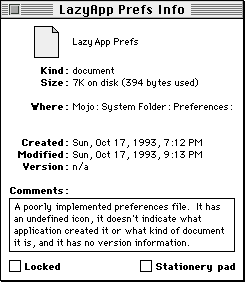
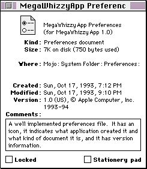
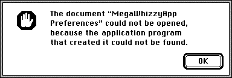
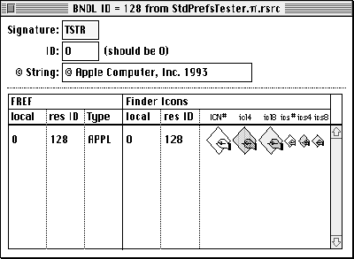
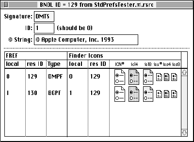
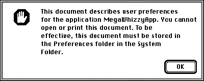
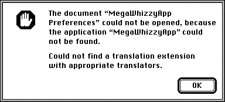
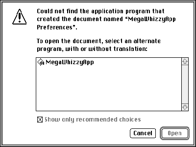

Many Macintosh applications use preferences files to keep track of user preferences.
This article describes the characteristics of a well implemented preferences file and
introduces a library that manages this work for you.
Preferences files have become a standard feature of most Macintosh applications. With
these files being so commonplace, it's timely to investigate how to implement them
properly. We'll first take a look at what constitutes a well implemented preferences
file; then we'll inspect a library API that provides a simple means of creating and
interacting with preferences files. On this issue's CD you'll find source code for a
standard preferences library and a test application that illustrates how to use the
library. This library is written with version 6.0.1 of Symantec's THINK C for
Macintosh using the universal interface files (which can also be found on the CD).
Before we begin, let's take a look at when and when not to create a preferences file. A
preferences file needs to be created only when the user has altered the default
configuration of the application. Upon being launched for the first time, many
applications automatically search for a preferences file and, if it isn't found,
immediately create one. But why? Has the user changed anything? Nope. The user
probably hasn't even had an opportunity to pull down an application menu at this point.
So why do we need to create a preferences file? We don't, and we shouldn't.
But given those situations in which your applicationshould create a preferences file,
read on to learn how to do it the right way.
The two Finder info windows shown in Figure 1 illustrate a poorly implemented and a
well implemented preferences file. We can categorize the visible differences in Figure
1 by file type, document kind, Finder icon, and version information, as explained in
the following sections. Note that the concepts presented here apply to implementingany
kind of document file, not just preferences files.

Poorly implemented preferences file

Well implemented preferences file
Figure 1. Info windows for example preferences files
FILE TYPE
Like any other file created by your application, your preferences file should have a
unique file type, which is specified in a file reference ('FREF') resource in the
application. The file type of the preferences file should be associated with the
application signature so that the Finder can display which application created the file
when its info window is shown. This association is made in your application's bundle
('BNDL') resource, which includes the application signature, the file reference
resources, and the application and document file icons. The info window for the poorly
implemented preferences file shown in Figure 1 doesn't display any information about
which application created the file because the file type isn't associated with an
application signature.
Incidentally, you shouldnot use 'pref' as the file type for your preferences file; this
file type is reserved for the Finder Preferences file (as you'd find out if you tried to
register this file type with Apple's Developer Support Center -- youwere going to do
that for the file type of your preferences file, right?). If you were to give your
preferences file this file type, you'd notice that when the user turns on Balloon Help,
the Balloon Help for your preferences file is actually the Balloon Help for the Finder
Preferences file. I'll go out on a limb here and assume that we can all agree this is
confusing for users, and should therefore be avoided.
DOCUMENT KIND
A file's Finder info window also indicates the kind of document the file is. In many
cases, this field reads either "document" or something like "MegaWhizzyApp
document." But with the introduction of the Translation Manager (first made available
with Macintosh Easy Open), a new resource type has been defined that your application
can use to more accurately describe its files, including its preferences file. This
resource is called the 'kind' resource, and its Rez definition is as follows:
type 'kind' {
literal longint; /* App signature */
integer; /* Region code of kind string localizations */
integer = 0;
integer = $$CountOf(kindArray) /* Array size */
wide array kindArray {
literal longint; /* File type */
pstring; /* Custom kind strings */
align word;
};
};
An example 'kind' resource might look like this:
resource 'kind' (128) {
'TSTR',
0,
{
'TEXT', "MegaWhizzyApp text document"
}
};
In this example, assuming the Translation Manager is present, a file with creator
'TSTR' and file type 'TEXT' will display the string "MegaWhizzyApp text document" in
the document kind field of its info window.
FINDER ICON
As suggested inMacintosh Human Interface Guidelines , the best icon for preferences
files is either the standard preferences file icon or an icon that incorporates some
elements of the standard preferences file icon (see Figure 2). It's not taboo to use a
unique preferences file icon, but this may make it difficult for users to recognize the
file as a preferences file.
Standard Icon
Movie Recorder
ResEdit
Figure 2. Example preferences file icons
As noted above, you provide a Finder icon for your preferences file the same way that
you provide Finder icons for your other document files -- through a bundle resource
in your application.
VERSION INFORMATION
A file's 'vers' (version) resources determine what version information is displayed in
the Finder info window. There are normally two 'vers' resources for a file -- 'vers'
IDs 1 and 2 -- and each contains the following: * A numeric code representing the
version. This code consists of a major revision number, a minor revision number, an
optional bug fix revision number, a stage code (development, alpha, beta, or final),
and a revision level (for non-final stages). * A region code, which indicates the
localized version of system software appropriate for use with the file. * A short
version string identifying the version number. * A long version string consisting of
the file version number and company copyright in 'vers' ID 1, and the product version
number and name in 'vers' ID 2.
For more information about these resources and how they affect what's displayed in the
Finder info window, see pages 7-31 to 7-32 ofInside Macintosh: Macintosh Toolbox
Essentials. For the structs corresponding to the 'vers' resource, check out the Files.h
header file.
Providing version information in your preferences files does more than just make the
Finder info window look pretty. You can use this information to identify the format of
the data contained in a preferences file. This is useful in determining how to translate
preferences data created by an older version of an application into the preferences
format for the current version of the application.
Users have a penchant for running rampant through their hard disks, looking for
interesting files to open, particularly if the files weren't explicitly created by them.
Files kept in the System Folder are no exception to this experimentation, so it should
come as no surprise to you that your application should be prepared to correctly
handle the case where its preferences file has been double-clicked.
There are several interesting possible behaviors that a preferences file might exhibit
under these circumstances. One alternative is that the application the preferences file
belongs to could launch, configuring itself with the data contained in the file. A
variation of this behavior would be to display the application's preferences dialog after
launching, if such a dialog were supported. A third behavior is that when a user
double-clicks a preferences file, its application isn't launched, but instead a dialog is
displayed describing what the file is, where it belongs, and why it can't be opened.
Today, the only preferences file behavior approved and documented by Apple is the last
one. The Human Interface Design Center of Apple's system software group has this to
say about preferences files:
It should be pointed out that launching an application by double-clicking a file
containing configuration data is not necessarily a bad thing -- it just shouldn't be done
with a preferences file. Your application could use an application-specific
configuration file to allow users to store and set up custom configurations. By creating
a specific file type for this information, you make it explicit to users that the
behavior of this file type is different from that of preferences files, and that it is
unique to your application.
Now let's take a closer look at how to implement the recommended preferences file
behavior.
SUPPRESSING LAUNCH UPON DOUBLE-CLICK
As we learned in the previous section, a preferences file isn't intended to be a
document that users can open and directly interact with in the application that created
it. So how can you keep users from launching your application when they double-click
your preferences file?
Let's take a brief look at how the System 7 Finder handles opening document files.
Normally, when a user tries to open a document file, the Finder searches for an
application that has a signature matching the file creator. If the search is successful,
the Finder launches the application and (if the application supports the required Apple
event suite) sends an Open Documents Apple event to the application, with the
document file as a parameter. If the search for the application that created the file
isn't successful, an alert similar to the one shown in Figure 3 is displayed.

Figure 3. Application-unavailable alert
Our problem is that we don't want the Finder to launch our application when a user
attempts to open its preferences file. One way to solve this (as suggested on pages
7-29 to 7-30 of Inside Macintosh: Macintosh Toolbox Essentials ) is to register a
"dummy" application signature that's different from the real signature of your
application, and then set this signature as the preferences file creator.
Normally, an application has only a single signature resource and a single bundle
resource. By creating a second bundle resource with a dummy application signature
and associating our preferences file with that signature, we fool the Finder into
looking for a nonexistent application for our preferences file, thus preventing the
Finder from launching our application when the preferences file is double-clicked.
Figure 4 shows examples of a normal application bundle resource and a dummy bundle
resource for the application's preferences file.
Remember to register both creators -- the real one and the dummy one --
with the Developer Support Center (AppleLink DEVSUPPORT, or Apple Computer, Inc.,
Creator/File Type Registration, 20525 Mariani Avenue, M/S 303-2T, Cupertino, CA
95014).
If you use this technique, you should also supply an application-missing message
string resource -- an 'STR ' resource with an ID of -16397 -- in the preferences
file. When the user tries to open a file and the application can't be found, the Finder
looks for this resource in the file. That string is displayed in the alert that comes up
when the user tries to open the file and -- due to the dummy bundle resource -- fails
(see Figure 5).

Application bundle resource

Dummy bundle resource for preferences filesFigure 4. Bundle resources

Figure 5. Can't open preferences file alert
Now for the catch: There are two ways this mechanism can be circumvented. First, it
can be overridden if Macintosh Easy Open is running. Macintosh Easy Open uses the
Translation Manager to open a file with an alternate application if the application that
created the file isn't available. It determines the file type of the file that the user is
trying to open and then looks for applications that support that file type by checking
their bundle resources. If no applications can be found that support the file type, an
alert notifying the user is displayed (see Figure 6). However, if any alternate
applications are found, an alert allowing the user to open the file with one of them is
displayed (see Figure 7). When Macintosh Easy Open is installed, one of these two
alerts will always be displayed in place of the normal application-unavailable alert.
Because our application has a dummy bundle resource that refers to the file type of
our preferences file, Macintosh Easy Open will always find the application that created
the preferences file as an alternate application. Fortunately, the Translation Manager
provides a mechanism to help us hide our preferences file -- the 'open' resource. In
the 'open' resource, an application can specify to the Translation Manager exactly what
file types it can actually open, regardless of what may be specified in any bundle
resources. By creating an 'open' resource that doesn't contain our preferences file
type, we can prevent Macintosh Easy Open from trying to open the file.
The Rez definition for the 'open' resource is given below.
type 'open' {
literal longint; /* App signature */
integer = 0;
integer = $$CountOf(typeArray) /* Array size */
wide array typeArray { /* File types that app can open */
literal longint; /* File type */
};
};
An example 'open' resource might look like this:
resource 'open' (128) {
'TSTR',
{
'TEXT'
}
};

Figure 6. Modified application-unavailable alert

Figure 7. Translation choices alert
In this example, we've declared that the application with creator 'TSTR' can only open
files of type 'TEXT' -- the Translation Manager will not attempt to use this application
to open any other type of file.
Our mechanism is also circumvented if the file type of the preferences file is 'PICT' or
'TEXT' and TeachText is installed. In this case, the Finder displays an alert asking
whether the user wants to open the document in TeachText, even if you supplied an
application-missing message string resource in the file and provided the appropriate
dummy bundle and 'open' resource in your application. This is a pretty good reason for
not using 'PICT' or 'TEXT' as the file type for your preferences file.
If you find the size of your preferences file breaking the megabyte (or even the 100K)
barrier, you're probably keeping information in the file that really doesn't belong
there. What follows are a few thoughts on what to put in your preferences files.
Keep your preferences as resources.
As we all know, you can put program data into either the data fork or the resource fork
of a Macintosh HFS file. The popular response to the question "What is a resource?" is
"Everything!", and this is still reasonable advice. It's fairly easy to design C structs
that mirror the structures of your preferences data, and you can even design 'TMPL'
resources that will let you look at your raw preferences data in a structured way by
opening your preferences file with ResEdit. Plus, you've got the Resource Manager to
do all the work of finding and loading the preferences data into memory for you. What
more could you ask?
Keep only global user preferences in your preferences file.
Bear in mind that some user preferences are global (application or environment
related) and some are local (document related) -- don't confuse the two. For example,
keeping track of the size and position of every document window that's ever been
opened by your application in its preferences file isn't a good idea (this information
should be kept with the document file corresponding to the document window), but
keeping a user-specified default window size and position in its preferences fileis a
good idea.
Avoid keeping machine-specific information in your preferences file.
It's rare that you really need to keep information such as the system software version
or the Macintosh model that your software is running on in your preferences file. Your
application generally should examine its environment at launch, and take appropriate
measures at that time to avoid using features that aren't supported in the current
environment.
Be careful of storing dynamic information in your preferences file.
A good example of something not to store in your preferences file is a volume reference
number. To quote Inside Macintosh: Files , "A volume reference number is valid only
until the volume is unmounted -- if a single volume is mounted and then unmounted,
the File Manager may assign it a different volume reference number when it is next
mounted." In this example, a better solution is to store an alias to the volume of
interest in the preferences file.
Use discretion in deciding what preferences to keep.
To a large degree, this means limiting user options to those that actually improve the
overall user experience. The only proven way to find out what those options are is to
conduct user testing on a variety of interface prototypes. It may turn out that while
you thought keeping track of the last known number of documents open during the
user's last session with your application was important, it actually adds little or
nothing when translated into the user's experience.
Don't keep static program data in your preferences file.
A file that just contains a lot of canned program data (such as tax forms) isnot a
preferences file -- it's simply a program data file, and it should normally reside in
the same folder as the application. That way, the user doesn't disable the application if
she throws away what she thinks is simply the application's preferences file (users
often do this to cause an application to reset back to its "factory" defaults, which, when
you think about it, is a pretty nasty way to make users reset a program).
We'll now take a look at the standard preferences library, a library for creating and
interacting with preferences files that follows all the rules we've set in the preceding
sections. The library API consists of 11 calls, described in detail below.
CREATING AND MANIPULATING A PREFERENCES FILE
In the routines described here, you'll notice that a preferences file is primarily
identified not by its name, but by its creator and file type. This is done to allow you to
localize the name of your preferences file easily, without requiring any code or
resource changes. Also, should a userinadvertently rename your preferences file, your
application can still find it. Because preferences files are identified in this manner,
it's important to remember to give each preferences file that your application uses a
unique creator/file type combination. The search sequence for a preferences file is as
follows: 1. If there's a Preferences folder in the System Folder, search it and any
folders within it (including nested ones). 2. If there's no Preferences folder, or if no
preferences file is found in the Preferences folder, search the files (not the folders)
in the System Folder.
pascal OSErr NewPreferencesFile (OSType creator, OSType fileType,
ConstStr31Param fileName, ConstStr31Param folderName,
ConstStr31Param ownerName);
NewPreferencesFile creates a preferences file with the specified creator, file type,
and filename in the System Folder (prior to System 7) or in the Preferences folder
(in System 7 or later). In the folderName argument, you can specify a custom
preferences folder in which to put a collection of preferences files; pass nil for this
argument if you don't want to use a custom preferences folder. If a folder name is
provided and the folder doesn't exist, NewPreferencesFile creates it. Another option is
to provide, in the ownerName argument, the name of the program (application,
extension, or whatever) that's creating the preferences file; if this argument is
supplied, a custom application- missing message string resource is created for the
preferences file.
pascal OSErr OpenPreferencesFile (OSType creator, OSType fileType,
short *refNum);
OpenPreferencesFile opens the preferences file having the specified creator and file
type. You must have created the file with NewPreferencesFile before making this call.
The preferences file reference is returned in the refNum argument; you'll use this to
identify which preferences file you're operating on when making other calls in the
standard preferences library.
pascal OSErr ClosePreferencesFile (short refNum);
ClosePreferencesFile closes the preferences file having the specified file reference.
That's it.
pascal OSErr DeletePreferencesFile (OSType creator, OSType fileType);
DeletePreferencesFile deletes the preferences file having the specified creator and file
type. Be sure the specified preferences file is closed before making this call.
pascal OSErr DeletePreferencesFolder (ConstStr31Param folderName);
DeletePreferencesFolder deletes the custom preferences folder specified by
folderName, along with any contents. Be sure there are no open preferences files in the
specified folder before making this call.
pascal OSErr PreferencesFileExists (OSType creator, OSType fileType);
PreferencesFileExists simply checks to see if a preferences file having the specified
creator and file type already exists. You can use this call to determine whether you
need to create a new preferences file.
ACCESSING INFORMATION IN A PREFERENCES FILE
These routines get or set the indicated resource information in the preferences file
specified by the refNum parameter.
pascal OSErr GetPreferencesFileVersion (short refNum, short versID,
NumVersion *numVersion, short *regionCode, ConstStr255Param
shortVersionStr, ConstStr255Param longVersionStr);
GetPreferencesFileVersion returns the contents of the specified 'vers' resource of the
preferences file. Only 'vers' ID 1 or 2 is allowed.
For those of you wondering why GetPreferencesFileVersion doesn't simply pass a
pointer to a VersRec (defined in Files.h) instead of passing each of the separate fields
of a VersRec, it's because the short version string and the long version string are
packed in a VersRec (it's possible that the shortVersion field of the VersRec will
actually contain part of the long version string). GetPreferencesFileVersion takes care
of unpacking the strings properly, and SetPreferencesFileVersion takes care of
packing them properly.
pascal OSErr SetPreferencesFileVersion (short refNum, short versID,
NumVersion *numVersion, short regionCode, ConstStr255Param
shortVersionStr, ConstStr255Param longVersionStr);
SetPreferencesFileVersion allows you to set the contents of the specified 'vers'
resource of the preferences file. Only 'vers' ID 1 or 2 is allowed.
pascal OSErr ReadPreference (short refNum, ResType resourceType,
short *resourceID, Handle *preference);
ReadPreference reads from the preferences file the resource specified by the
resourceType and resourceID arguments, and returns it in the preference argument. If
you pass nil as the address of the resourceID argument or 0 as its value,
ReadPreference finds the first resource with the specified type in the preferences file.
If you pass 0 as the value of resourceID, ReadPreference returns the resource ID
corresponding to the preference resource it found.
pascal OSErr WritePreference (short refNum, ResType resourceType,
short *resourceID, Handle preference);
WritePreference writes the resource specified by the resourceType and resourceID
arguments to the preferences file. If you pass nil as the address of the resourceID
argument or 0 as its value, WritePreference assigns the preference resource a
resource ID and returns it in the resourceID argument (if its address isn't nil). If a
resource with the same resource type and ID already exists in the preferences file, the
existing resource is replaced with the new one. WritePreference checks that there
will be a minimum amount (the exact amount varies as a function of the volume's
allocation block size) of disk space remaining on the volume containing the blessed
System Folder before actually updating the preferences file; if there isn't enough disk
space, the preferences file is unmodified and an error is returned. Note that it's the
caller's responsibility to release the memory occupied by the preference argument;
WritePreference does not dispose of this memory automatically.
pascal OSErr DeletePreference (short refNum, ResType resourceType,
short resourceID);
DeletePreference deletes the resource specified by the resourceType and resourceID
arguments from the preferences file. If you pass 0 as the value of resourceID,
DeletePreference deletes the first resource with the specified type in the preferences
file.
In this article, we've explored what constitutes good design for preferences files, and
we've examined a library that helps with implementing preferences files. Armed with
this knowledge and the standard preferences library, you too can add preferences files
to your application the preferred way!
REFERENCES
GARY WOODCOCK, formerly of Apple but now at 3DO, is currently assimilating
experiences accrued during his annual pilgrimage to the South by Southwest Music
Conference in Austin, Texas. For those readers who find stimulation in spending four
days and nights attending live performances by a diverse assortment of interesting,
boisterous, and relatively unknown bands playing in a variety of beer-drenched pubs,
in the company of equally interesting, boisterous, and beer-drenched people, a better
venue Gary cannot recommend. *
Thanks to our technical reviewers Nick Kledzik, Jim Luther, and John Mitchell.
Special thanks to Jim Luther for his excellent file system utilities (collect 'em all --
they're on this issue's CD) and to Elizabeth Moller for her assistance on human
interface issues.*